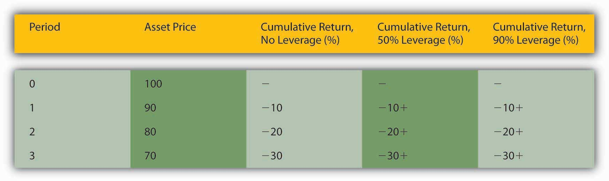

A financial panicPanicked selling occurs during the rapid de-leveraging of the financial system following the bursting of an asset bubble. occurs when leveraged financial intermediaries and other investors must sell assets quickly in order to meet lenders’ callsA lender asks a borrower to repay, usually because interest rates have increased and/or the value of collateral has declined.. Lenders call loans, or ask for repayment, when interest rates increase and/or when the value of collateral pledged to repay the loan sinks below the amount the borrower owes. Calls are a normal part of everyday business, but during a panic, they all come en masse due to some shock, often the burstingWhen an asset bubble rapidly deflates, i.e., the price of the asset rapidly decreases. of an asset bubble. Bubbles, like people, are bound to die but nobody knows in advance when they will do so. A burst is sometimes triggered by an obvious shock, like a natural catastrophe or the failure of an important company, but sometimes something as seemingly innocuous as a large sell order can touch them off.
During a panic, almost everybody must sell and few can or want to buy, so prices plummet, triggering additional calls, and yet more selling. Invariably, some investors, usually the most highly leveraged ones, cannot sell assets quickly enough, or for a high enough price, to “meet the call” and repay their loans. Banks and other lenders begin to suffer defaults. Their lenders (other banks, depositors, holders of commercial paper), in turn, begin to wonder if they are still credit-worthy. Asymmetric information and uncertainty reign supreme, inducing lenders to restrict credit. At some point, investors’ emotions take over, and they literally go into a panic, one that makes Tony Soprano’s panic attacks seem like a stroll in the park.www.menshealth.com/health/when-panic-attacks
Panics often cause the rapid de-leveragingLenders force borrowers to invest more of their own equity in assets.of the financial system, a period when interest rates for riskier types of loans and securities increase and/or when a credit crunchThe volume of loans decreases dramatically, usually in response to the bursting of an asset bubble during a financial crisis., or a large decrease in the volume of lending, takes place. Such conditions often usher in a negative bubbleA bubble characterized by prices that are far below their rational value., a period when high interest rates, tight credit, and expectations of lower asset prices in the future cause asset values to trend downward, sometimes well below the values indicated by underlying economic fundamentals. During de-leveraging, the forces that drove asset prices up now conspire to drag them lower.
In New York in 1764, interest rates spiked from 6 to 12 percent and expected revenues from land plummeted by about 25 percent. What happened to real estate prices and why?
They dropped significantly because it was more expensive to borrow money, thus increasing the total cost of real estate ownership, and because the land was expected to yield lower revenues. Thinking of the land as a perpetuity and FV as the expected revenues arising from it:
And that is just the real estate effect. Decreasing FV by £25 leads to the following:
“I know of sundry Estates [farms and other landed property] that has been taken by Execution [foreclosed upon],” a New York merchant reported late in 1766, “and sold for not more than one third of their value owing to the scarcity of money.”
As shown in Figure 13.3 "The effects of leverage on returns in a falling market", the most highly leveraged investor suffers most of all.
Figure 13.3 The effects of leverage on returns in a falling market
Again, I used the rate of return formula, but coupons are zero so that R = (Pt1 – Pt0)/Pt0. As the price of the asset falls, the unleveraged investor suffers negative returns:
The leveraged investors lose the same percentage and must now pay a high interest rate for their loans, or put up the equity themselves, at a time when the opportunity cost of doing so is substantial:
The higher the leverage, the larger the sum that must be borrowed at high rates.
Also, the higher the leverage, the smaller the price change needs to be to trigger a call. At 50 percent leverage, a $100 asset could drop to $50 before the lender must call. At 90 percent leverage, a $100 asset need lose only $10 to induce a call.